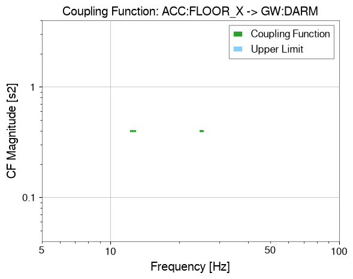
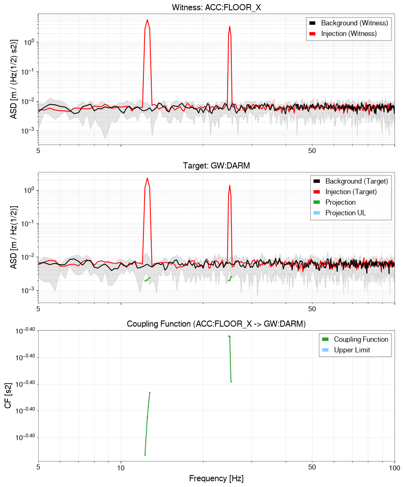
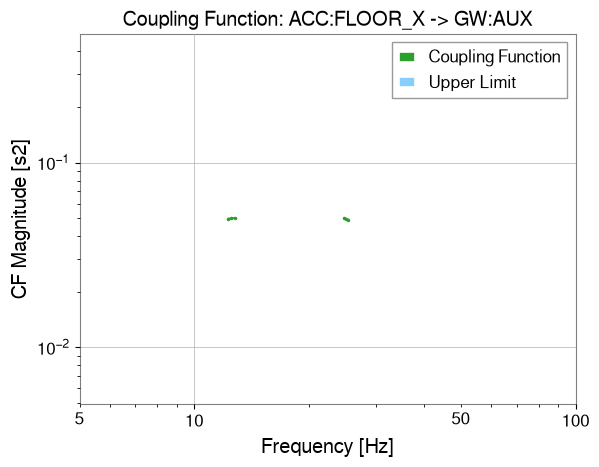
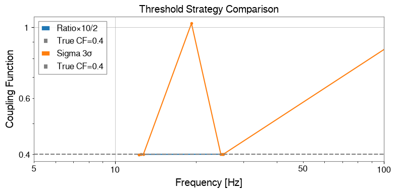

カップリング解析: マルチチャンネル結合#
このチュートリアルでは gwexpy.analysis.CouplingFunctionAnalysis を使ったカップリング関数（CF）解析のワークフローを解説します。
カップリング関数とは#
カップリング関数は、ウィットネス（環境センサー）のノイズがターゲット（感度チャンネル）にどれだけ結合するかを定量化します:
ここで \(P_{\rm inj}\) と \(P_{\rm bkg}\) はそれぞれ注入時・バックグラウンド時のパワースペクトル密度です。
典型的な用途: KAGRA/LIGO/Virgo の PEM（Physical Environment Monitor）インジェクション解析
レガシー移行メモ: PSD を手動で計算し、それらを割り、scipy で独自のしきい値を適用していたレガシーコードは、このワークフローがすべて置き換えます。移行の案内は GWpy ユーザーのための GWexpy と GWpy 差分 API 一覧 を参照してください。
注 — SigmaThreshold の統計的妥当性: 平均化セグメント数
n_avgが 10 未満の場合、χ²(2K) 分布のガウス近似の精度が低下します。この場合はUserWarningが出力されます。短いデータセグメントではPercentileThresholdの使用を検討してください。
import warnings
warnings.filterwarnings("ignore", category=UserWarning)
warnings.filterwarnings("ignore", category=DeprecationWarning)
import matplotlib.pyplot as plt
import numpy as np
from astropy import units as u
from gwexpy.analysis.coupling import (
CouplingFunctionAnalysis,
RatioThreshold,
SigmaThreshold,
)
from gwexpy.timeseries import TimeSeries, TimeSeriesDict
1. 合成インジェクション／バックグラウンドデータの準備#
シミュレーション設定:
ウィットネスチャンネル（環境センサー）: 地震計・音響センサー
ターゲットチャンネル 2 本: 結合強度の異なる感度計
インジェクションではウィットネスにトーン信号を加えます。ターゲットへの応答は結合強度に比例します。
rng = np.random.default_rng(0)
fs = 512 # sample rate [Hz]
T = 32.0 # duration [s]
n = int(fs * T)
t = np.arange(n) / fs
dt = (1 / fs) * u.s
# Frequency bins for injected tones
f_inj1 = 12.5 # Hz
f_inj2 = 25.0 # Hz
# Noise floor
noise_level = 0.1
# --- Background data (no injection) ---
wit_bkg = rng.normal(0, noise_level, n)
tgt1_bkg = rng.normal(0, noise_level, n)
tgt2_bkg = rng.normal(0, noise_level, n)
# --- Injection data: excite the witness with tones ---
inj_signal = 5.0 * np.sin(2 * np.pi * f_inj1 * t) + 3.0 * np.sin(2 * np.pi * f_inj2 * t)
wit_inj = inj_signal + rng.normal(0, noise_level, n)
# Target 1: strong coupling (CF ≈ 0.4 at f_inj1, 0.3 at f_inj2)
cf_true1 = 0.4
tgt1_inj = cf_true1 * inj_signal + rng.normal(0, noise_level, n)
# Target 2: weak coupling (CF ≈ 0.05)
cf_true2 = 0.05
tgt2_inj = cf_true2 * inj_signal + rng.normal(0, noise_level, n)
# Wrap in TimeSeries
def make_ts(data, name, unit=u.ct):
return TimeSeries(data, dt=dt, t0=0*u.s, unit=unit, name=name)
# Background dict
data_bkg = TimeSeriesDict({
"ACC:FLOOR_X": make_ts(wit_bkg, "ACC:FLOOR_X", u.m / u.s**2),
"GW:DARM": make_ts(tgt1_bkg, "GW:DARM", u.m),
"GW:AUX": make_ts(tgt2_bkg, "GW:AUX", u.m),
})
# Injection dict
data_inj = TimeSeriesDict({
"ACC:FLOOR_X": make_ts(wit_inj, "ACC:FLOOR_X", u.m / u.s**2),
"GW:DARM": make_ts(tgt1_inj, "GW:DARM", u.m),
"GW:AUX": make_ts(tgt2_inj, "GW:AUX", u.m),
})
print("Background channels:", list(data_bkg.keys()))
print("Injection channels: ", list(data_inj.keys()))
Background channels: ['ACC:FLOOR_X', 'GW:DARM', 'GW:AUX']
Injection channels: ['ACC:FLOOR_X', 'GW:DARM', 'GW:AUX']
2. カップリング関数解析の実行#
CouplingFunctionAnalysis.compute() にインジェクション・バックグラウンドの TimeSeriesDict とウィットネスチャンネル名を渡します。
cfa = CouplingFunctionAnalysis()
results = cfa.compute(
data_inj=data_inj,
data_bkg=data_bkg,
fftlength=4.0, # 4-second FFT segments
overlap=0.5, # 50% overlap
witness="ACC:FLOOR_X", # the environmental sensor
threshold_witness=RatioThreshold(ratio=10.0), # witness must show 10× excess
threshold_target=RatioThreshold(ratio=2.0), # target must show 2× excess
)
print("Results computed for:", list(results.keys()))
Results computed for: ['GW:DARM', 'GW:AUX']
3. 結果の確認#
CouplingResult オブジェクトにカップリング関数・上限・診断 PSD が格納されています。
# Strong coupling channel (GW:DARM)
res_darm = results["GW:DARM"]
print("CF valid bins:", res_darm.valid_mask.sum())
print("CF at f_inj1 bin:", end=" ")
freqs = res_darm.cf.frequencies.value
idx1 = np.argmin(np.abs(freqs - f_inj1))
idx2 = np.argmin(np.abs(freqs - f_inj2))
print(f"{res_darm.cf.value[idx1]:.3f} (expected ~{cf_true1})")
print(f"CF at f_inj2 bin: {res_darm.cf.value[idx2]:.3f} (expected ~{cf_true1})")
# Simple CF plot
res_darm.plot_cf(xlim=(5, 100));
CF valid bins: 6
CF at f_inj1 bin: 0.400 (expected ~0.4)
CF at f_inj2 bin: 0.401 (expected ~0.4)

# Full diagnostic plot: Witness ASD | Target ASD | CF
res_darm.plot(xlim=(5, 100));

# Weak coupling channel (GW:AUX)
res_aux = results["GW:AUX"]
print("GW:AUX valid CF bins:", res_aux.valid_mask.sum())
res_aux.plot_cf(xlim=(5, 100));
GW:AUX valid CF bins: 6

import warnings
4. 閾値戦略の比較#
gwexpy には 3 種類の組み込み閾値戦略があります:
戦略 |
説明 |
適したデータ |
|---|---|---|
|
\(P_{\rm inj} > r \cdot P_{\rm bkg}\) |
高速スクリーニング・物理的な根拠がある場合 |
|
ガウス統計的有意性検定 |
定常・ガウス背景 |
|
経験的分布 |
非ガウス・グリッチが多い背景 |
import warnings
with warnings.catch_warnings():
warnings.simplefilter('ignore')
# Compare threshold strategies
n_avg = T / 4.0 # approximate averaging count for 4-second FFT
strategies = {
"Ratio×10/2": (RatioThreshold(10.0), RatioThreshold(2.0)),
"Sigma 3σ": (SigmaThreshold(3.0), SigmaThreshold(2.0)),
}
fig, ax = plt.subplots(figsize=(8, 4))
for label, (thr_w, thr_t) in strategies.items():
res = cfa.compute(
data_inj=data_inj,
data_bkg=data_bkg,
fftlength=4.0,
overlap=0.5,
witness="ACC:FLOOR_X",
threshold_witness=thr_w,
threshold_target=thr_t,
)
cf = res["GW:DARM"].cf
valid = ~np.isnan(cf.value)
ax.plot(cf.frequencies.value[valid], cf.value[valid], marker=".", label=label)
ax.axhline(cf_true1, color="gray", linestyle="--", label=f"True CF={cf_true1}")
ax.set_xscale("log")
ax.set_yscale("log")
ax.set_xlim(5, 100)
ax.set_xlabel("Frequency [Hz]")
ax.set_ylabel("Coupling Function")
ax.set_title("Threshold Strategy Comparison")
ax.legend()
plt.tight_layout()

5. 周波数帯域制限#
frange を使うと、カップリング関数の評価を特定の周波数帯に限定できます。
results_band = cfa.compute(
data_inj=data_inj,
data_bkg=data_bkg,
fftlength=4.0,
overlap=0.5,
witness="ACC:FLOOR_X",
frange=(10.0, 50.0), # only evaluate 10–50 Hz
)
cf_band = results_band["GW:DARM"].cf
valid_band = ~np.isnan(cf_band.value)
print(f"Valid CF bins in 10–50 Hz: {valid_band.sum()}")
results_band["GW:DARM"].plot_cf(xlim=(5, 100));
Valid CF bins in 10–50 Hz: 6
6. 上限値（Upper Limit）#
ウィットネスは励起されているがターゲットに測定可能な過剰が見られない周波数では、gwexpy はカップリング関数の 上限値 を計算します。
これは、カップリングがノイズフロア以下の場合でも制約を与えるのに有用です。
# Upper limit is automatically computed in cf_ul attribute
res_darm = results["GW:DARM"]
cf_ul = res_darm.cf_ul
ul_valid = ~np.isnan(cf_ul.value)
print(f"Upper limit bins: {ul_valid.sum()}")
# The full diagnostic plot includes both CF and upper limit
res_darm.plot_cf(xlim=(5, 100));
Upper limit bins: 0
まとめ#
from gwexpy.analysis.coupling import CouplingFunctionAnalysis, RatioThreshold
cfa = CouplingFunctionAnalysis()
results = cfa.compute(
data_inj=data_inj, # TimeSeriesDict with injection data
data_bkg=data_bkg, # TimeSeriesDict with background data
fftlength=4.0,
witness="ACC:FLOOR_X",
threshold_witness=RatioThreshold(25.0),
threshold_target=RatioThreshold(4.0),
)
# Access result for one target
res = results["GW:DARM"]
res.plot() # diagnostic 3-panel plot
res.cf # FrequencySeries: coupling function values
res.cf_ul # FrequencySeries: upper limits
関連チュートリアル: